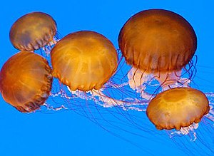
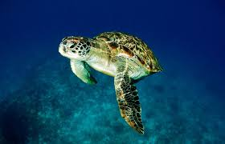
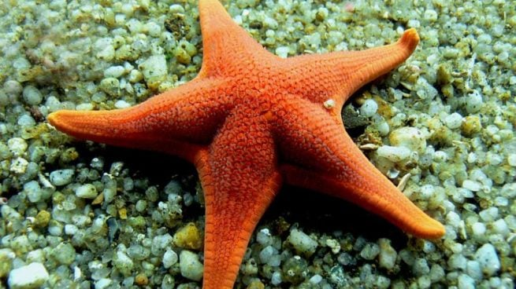

ENCICLOPÈDIA
PEIXOS MARINS
Els peixos marins enfronten una alarmant disminució a causa de la sobrepesca, la contaminació i el canvi climàtic, que destrueixen els seus hàbitats. Entre les espècies més amenaçades destaca la tonyina vermella (Thunnus thynnus), la població de la qual ha caigut dràsticament per la pesca intensiva, especialment per a satisfer la demanda de sushi i sashimi. Aquest peix, vital per a l'equilibri de l'ecosistema marí, també sofreix per la pèrdua de zones de reproducció a causa de l'escalfament global. Malgrat els esforços de conservació, com les quotes de pesca i reserves marines, es necessita una acció global més ferma per a evitar la seva extinció i protegir la biodiversitat oceànica.

CNIDARIS
Els cnidaris, com a corals, meduses i anemones, són vitals per als ecosistemes marins, però enfronten greus amenaces a causa del canvi climàtic, la contaminació i l'activitat humana. Els corals, especialment la coral banya d'alci (Acropora palmata), estan en perill crític d'extinció. Aquest coral és fonamental per a la formació d'esculls, que protegeixen costes i alberguen una rica biodiversitat. No obstant això, l'emblanquiment per l'augment de la temperatura de l'aigua, l'acidificació dels oceans i les malalties han reduït les seves poblacions dràsticament. La conservació requereix accions urgents per a frenar l'escalfament global i protegir els hàbitats marins.

CRUSTACIS
Els crustacis, essencials per als ecosistemes aquàtics i l'economia pesquera, enfronten creixents amenaces a causa de la sobreexplotació, la contaminació i el canvi climàtic. Una de les espècies més vulnerables és el cranc ferradura (Limulus polyphemus), encara que tècnicament un quelicerado, és crucial com a bioindicador i font d'aliment per a moltes espècies. Aquest animal ha vist disminuir les seves poblacions per la recol·lecció per a la indústria farmacèutica, la pèrdua d'hàbitats i l'augment del nivell de la mar. La protecció dels crustacis requereix un maneig sostenible de la pesca, reducció de contaminants i polítiques globals que combatin el canvi climàtic.

REPTILS
Els rèptils marins enfronten greus amenaces a causa de la contaminació, el canvi climàtic i la destrucció d'hàbitats costaners. Entre ells,la tortuga llaüt (Dermochelys coriacea) està en perill crític d'extinció. Aquesta espècie, la major de les tortugues marines, és vital per a l'equilibri dels ecosistemes oceànics. No obstant això, la seva població ha disminuït dràsticament per la captura incidental en xarxes de pesca, la ingestió de plàstics i la pèrdua d'àrees d'implantació a causa de l'augment del nivell de la mar. La conservació dels rèptils marins requereix esforços globals per a protegir els seus hàbitats, regular la pesca i reduir la contaminació.

MOL·LUSCOS
Els mol·luscos, com a cloïsses, caragols, polps i calamars, són essencials per als ecosistemes aquàtics i les economies locals, però estan greument amenaçats per la contaminació, la sobreexplotació i el canvi climàtic. Una de les espècies més en perill és la cloïssa gegant (Tridacna gigues), la major cloïssa del món. La seva població ha disminuït dràsticament a causa de la recol·lecció excessiva per a consum i el comerç de les seves petxines. A més, l'escalfament global afecta els esculls on habita, destruint el seu entorn natural. Protegir els mol·luscos requereix regulacions estrictes, restauració d'hàbitats marins i un enfocament global per a combatre el canvi climàtic.

EQUINODERMS
Els equinoderms, com a estrelles de mar, eriçons i cogombres de mar, exerceixen un paper crucial en els ecosistemes marins en contribuir a l'equilibri dels fons oceànics i reciclar nutrients. No obstant això, estan en risc per la contaminació, la pesca excessiva i el canvi climàtic. Una de les espècies més amenaçades és el cogombre de mar (Holothuria edulis), altament demandat en el mercat asiàtic pel seu ús culinari i medicinal. La sobreexplotació ha reduït dràsticament les seves poblacions, mentre que la degradació dels esculls coralinos agreuja la situació. Urgeixen mesures de conservació per a protegir els seus hàbitats i garantir la seva supervivència.
